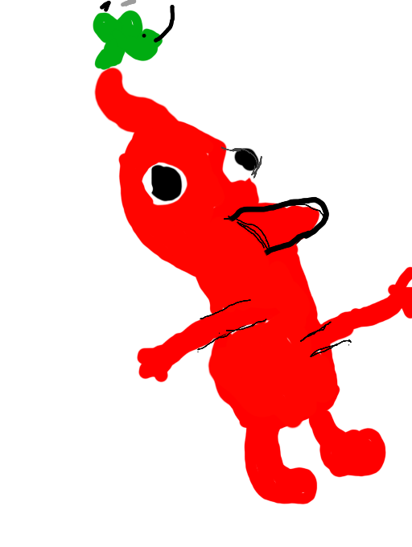

Contact
 Téléphone: 07 69 77 77 92
Téléphone: 07 69 77 77 92
 Mail : robin.bouvier@etu-uca.fr
Mail : robin.bouvier@etu-uca.fr
 Github : https://github.com/RobinBouvier
Github : https://github.com/RobinBouvier
 Linkedin : https://crouton.net
Linkedin : https://crouton.net

Je suis actuellement en première année de Bachelor Universitaire de Technologie (BUT) Réseau et Télécommunications.
J'ai choisi ces études grâce au stage que j'ai pu faire à l'UTT (Université de Technologie de Troyes) où j'ai pu voir les bases des réseaux et manipuler différents appareils.
En groupe, nous avons configurer des switches pour permettre des parties de jeu en réseau local sur le jeu Teeworlds. Les explications des étudiants et la finalité du projet proposé
m'ont fait comprendre que le réseau était la voie que je souhaitais emprunter.
Je suis actuellement à la recherche d'une alternance dans le domande des réseaux, des télécommunications et de la cybersécurité à compter de septembre 2024.
Septembre 2023 : entrée en BUT Réseaux et Télécommunications à Aubière (63), durant cette formation de 3 ans sont prévus l'exploration de domaines divers et variés tel que les réseaux, la programmation et les télécommunications.
Juin 2023 : Obtention du Baccalauréat mention Bien au lycée Simone Weil au Puy-en-Velay (43)
Août 2023 : Préparateur de commandes - Gel 43 - Saint-Germain-Laprade (43)
Téléphone: 07 69 77 77 92
Mail : robin.bouvier@etu-uca.fr
Github : https://github.com/RobinBouvier
Linkedin : https://crouton.net